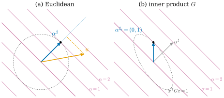
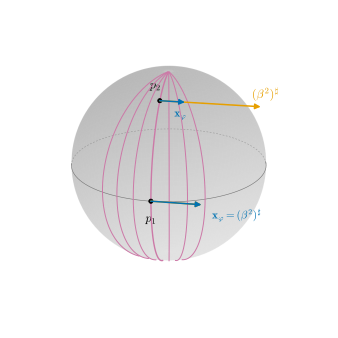

34.3 Covectors, Sharp, and Flat
Goals
- covector를 “vector를 재는 도구”로 보고, inner product가 있으면 그 측정이 정사영의 길이에 비례함을 증명할 수 있다.
- flat \(u^\flat\)과 sharp \(\alpha^\sharp\)을 Chapter 1의 isomorphism으로 이해하고, Gram matrix로 계산할 수 있다.
- 같은 covector라도 inner product가 바뀌면 \(\alpha^\sharp\)이 바뀐다는 것을 그림과 sphere의 예로 설명할 수 있다.
- \(V^*\)에 inner product와 orientation을 주어, Section 34.2를 covector 쪽에서도 쓸 준비를 한다.
Prerequisites
- Definition 1.3.1 (dual space), Definition 1.3.4 (dual basis), Theorem 1.3.5
- Theorem 1.4.6 (transformation of covector components and the dual basis), Definition 1.4.7 (contravariant and covariant)
- Definition 1.5.12 (Gram matrix), Proposition 1.5.15 (isomorphism given by an inner product), Example 1.5.16
- Proposition 34.2.1, Lemma 34.2.3, Example 34.2.10(b)의 inner product \(G\)
- sphere의 first fundamental form: Example 7.1.2
Motivation
Section 34.2에서는 inner product를 써서 \(k\)-vector를 그 orthogonal complement 쪽으로 옮겼다. inner product에는 더 기본적인 쓰임이 하나 있다. vector를 “재는 도구”로 바꾸는 것이다.
무언가를 잴 때 쓰는 도구는 재는 대상과 같은 차원을 갖는다. 길이는 자로, 넓이는 넓이를 가진 무언가로 잰다 [CMU-DDG L4]. 1차원의 측정 도구가 covector다. Chapter 35에서 적분하는 대상(differential form)과 Chapter 36에서 mesh의 edge에 저장하는 수는 모두 이런 측정값이다. 그래서 vector(“재어지는 것”)와 covector(“재는 것”)를 구별하고, 둘 사이를 오가는 규칙을 분명히 해 두어야 한다.
평평한 \(\R^n\)에서는 이 구별이 사소해 보인다. 성분만 보면 covector는 행벡터, vector는 열벡터이고 transpose로 오간다. 그러나 surface 위에서는 점마다 inner product(first fundamental form)가 다르고, 그때 “transpose”는 틀린 답을 준다. 이 절은 오가는 규칙이 inner product에 어떻게 의존하는지를 본다.
Covectors Measure Vectors
Definition 1.3.1을 상기하자. vector space \(V\)의 covector는 linear map \(\alpha\colon V \to \R\)이고, 그 전체가 dual space \(V^*\)이다. Crane의 그림으로는 covector가 방향 하나를 정해 두고 vector의 “그 방향으로의 그림자 길이”를 잰다 [Cr §4.3]. inner product 없이도 그릴 수 있는 그림은 Chapter 1의 등위선 그림이다: \(\alpha(u)\)는 \(u\)가 원점에서 출발해 건너는 등위선 \(\{\alpha = c\}\)(\(c\)는 정수)의 개수다(Figure 1.3.1). 그림자 길이라는 그림은 inner product가 있어야 정확해진다. 그것은 아래 Proposition 34.3.2에서 본다.
Example 34.3.1 (covectors on functions sampled at vertices). \(\R^n\)의 covector는 행벡터와의 곱이고(Example 1.3.2(a)), 다항식 공간에서는 한 점에서의 값과 적분이 covector였다(Example 1.3.2(d)). mesh에서 자주 만나는 예를 보자. vertex가 \(n_0\)개인 mesh 위의 함수를 vertex 값의 목록 \(u = (u_1, \dots, u_{n_0}) \in \R^{n_0}\)으로 저장한다. 다음은 \(\R^{n_0}\)의 covector다.
- (a) vertex \(i\)에서의 값 \(u \mapsto u_i\). 이것은 dual basis의 \(e^i\)이다.
- (b) 넓이 가중합 \(u \mapsto \sum_i A_i u_i\). 여기서 \(A_i \gt 0\)은 vertex \(i\)에 배정한 넓이(예: 이웃 triangle 넓이의 \(1/3\)씩)다. 함수의 적분 \(\int u\,dA\)의 근사이고, 행벡터 \((A_1, \dots, A_{n_0})\)로 쓴다.
- (c) (non-example) \(u \mapsto \max_i u_i\)와 \(u \mapsto \sum_i A_i u_i^2\)(에너지)는 covector가 아니다. \(u\)를 \(-u\)로 바꾸면 각각 값이 \(-\max_i u_i\)가 아니라 \(-\min_i u_i\)가 되거나, 부호가 바뀌지 않기 때문이다.
(a)와 (b)는 둘 다 “함수를 재는 도구”지만 성격이 다르다. (a)는 점에서의 값이고, (b)는 넓이가 들어간 적분이다. 둘을 잇는 것이 아래의 \(\flat\)이다(Smooth vs. Discrete 상자).
Sharp and Flat
이제 \((V, g)\)가 \(n\)차원 inner product space라 하자. Proposition 1.5.15의 isomorphism \(\hat g\colon V \to V^*\)과 그 역을
로 쓰고 flat, sharp라 읽는다. 둘을 함께 musical isomorphism(음악적 동형사상)이라 한다(Section 21.5). 기호는 악보에서 왔다. basis \((b_i)\)의 Gram matrix를 \(G = (g_{ij})\), 그 inverse matrix를 \((g^{ij})\)로 쓰면 (1.5.7)이 성분 공식을 준다:
\(\flat\)은 vector의 위첨자를 아래로 내리고(♭, 반음 내림), \(\sharp\)은 covector의 아래첨자를 위로 올린다(♯, 반음 올림). 유클리드 \(\R^n\)의 standard basis에서는 \(G = I\)라 숫자가 그대로다(Example 1.5.16(a)). Crane의 노트도 같은 기호와 같은 정의를 쓴다 [Cr §4.3], [CMU-DDG L4] slides 13–14.
Proposition 34.3.2 (a covector measures projected length). \((V, g)\)가 inner product space이고 \(\alpha \in V^*\), \(\alpha \neq 0\)이라 하자. \(a = \alpha^\sharp\), \(\hat a = a/\abs{a}\)로 쓰자.
- (a) 모든 \(u\)에 대하여 \(\alpha(u) = \abs{a}\; g(\hat a, u)\)이다. \(g(\hat a, u)\)는 \(u\)를 직선 \(\R a\)로 정사영한 것의 부호 있는 길이다.
- (b) \(\ker\alpha = a^\perp\)이고, level set \(\{\alpha = c\}\)는 \(a^\perp\)를 \(c\,a/\abs{a}^2\)만큼 평행 이동한 것이다. 이웃한 level set \(\{\alpha = c\}\)와 \(\{\alpha = c + 1\}\)은 \(a\) 방향으로 \(1/\abs{a}\)만큼 떨어져 있다.
- (c) \(\abs{u}_g = 1\)인 \(u\) 가운데 \(\alpha(u)\)를 가장 크게 하는 것은 \(\hat a\) 하나뿐이고, 그 최댓값은 \(\abs{a}\)이다.
이 명제가 말하는 것. covector는 한 방향(\(\alpha^\sharp\)의 방향)으로의 그림자 길이를 재고, 그 결과에 “눈금의 촘촘함” \(\abs{\alpha^\sharp}\)를 곱한다. 등위선이 촘촘할수록 \(\alpha^\sharp\)이 길다. \(\alpha^\sharp\)은 등위선에 수직이고 \(\alpha\)가 가장 빨리 커지는 방향이다. 단 “수직”, “길이”, “가장 빨리”가 모두 \(g\)로 잰 것이다.
Proof. (a) (34.3.1)에서 \(\alpha(u) = g(a, u) = \abs{a}\,g(\hat a, u)\)이다. 정사영은 \(g(\hat a, u)\,\hat a\)이고(Proposition 1.5.9를 \(\hat a\)를 포함하는 orthonormal basis에 쓴다) 그 부호 있는 길이가 \(g(\hat a, u)\)다.
(b) \[ \begin{aligned} \alpha(x) = c &\iff g(a, x) = c \\ &\iff g\big(a, x - c\,a/\abs{a}^2\big) = 0 \\ &\iff x - c\,a/\abs{a}^2 \in a^\perp. \end{aligned} \] \(c = 0\)이면 \(\ker\alpha = a^\perp\)이다. 두 level set의 점 \(c\,a/\abs{a}^2\)과 \((c+1)\,a/\abs{a}^2\)를 잇는 선분 \(a/\abs{a}^2\)는 두 평행한 hyperplane 모두에 수직이고 길이가 \(1/\abs{a}\)이다.
(c) Cauchy–Schwarz inequality(Theorem 1.5.5)에서 \(\alpha(u) = g(a, u) \le \abs{a}\abs{u}_g = \abs{a}\)이고, 등호는 \(u\)가 \(a\)의 양수배일 때뿐이다.
Figure 34.3.1의 (a)를 보자. 자주색 직선들이 \(\alpha = e^1 + e^2\), 즉 \(\alpha(x) = x^1 + x^2\)의 등위선 \(\alpha = -3, \dots, 3\)이다. 파란 \(\alpha^\sharp = (1, 1)\)은 등위선에 수직이다. 반지름 \(\abs{\alpha^\sharp} = \sqrt2\)인 점선 원은 등위선 \(\{\alpha = 2\}\)에 \(\alpha^\sharp\)의 끝(검은 점)에서 접한다. Proposition 34.3.2(c)의 그림이다. 주황 \(u = (2.2, 0.4)\)에서 파란 점선 직선으로 내린 주황 점선이 정사영이다. 그 길이는 \(2.6/\sqrt2\)이고, \(\sqrt2\)를 곱하면 \(\alpha(u) = 2.6\)이다. \(u\)의 끝이 등위선 \(\alpha = 2\)와 \(\alpha = 3\) 사이에 있는 것과 맞는다. (b)는 다음 예에서 본다.

Example 34.3.3 (one covector, two inner products). \(\R^2\)에서 \(\alpha = e^1 + e^2\)를 생각하자. 유클리드 inner product에서는 \(G = I\)이므로 (34.3.2)에서 \(\alpha^\sharp = (1, 1)\)이다. \(G = \begin{pmatrix} 2 & 1 \\ 1 & 1\end{pmatrix}\)이면 \(\det G = 1\)이고 \(G^{-1} = \begin{pmatrix} 1 & -1 \\ -1 & 2\end{pmatrix}\)이므로
\[ \alpha^{\sharp_g} = G^{-1}\begin{pmatrix} 1 \\ 1\end{pmatrix} = \begin{pmatrix} 0 \\ 1\end{pmatrix} = e_2 \]
이다. 확인: \(g(e_2, w) = (0, 1)\,G\,w = w^1 + w^2 = \alpha(w)\). 등위선의 방향 \(d = (1, -1)\)에 대해 \(g(e_2, d) = 1 - 1 = 0\)이므로 \(e_2\)는 등위선과 \(g\)-수직이다. 유클리드로는 수직이 아니다. 거꾸로 같은 vector \(u = e_1\)도 \(e_1^\flat = e^1\)(유클리드)와 \(e_1^{\flat_g} = 2e^1 + e^2\)(\(G\)의 첫째 열)로 다른 covector가 된다. Figure 34.3.1(b)에서 파란 \(\alpha^{\sharp_g} = (0, 1)\)의 끝이 점선 타원(\(g\)-단위원)과 등위선 \(\{\alpha = 1\}\)의 접점이다. 회색 \(\alpha^\sharp = (1,1)\)과 방향이 다르다.
Verification: verify/v-34-3-sharp-flat.py
이처럼 \(\sharp\)과 \(\flat\)은 inner product에 의존한다. inner product를 하나 정하기 전에는 vector와 covector 사이에 자연스러운 대응이 없다(Remark 1.3.16). Chapter 35에서 함수의 “gradient”를 이렇게 \(\sharp\)으로 정의하는 이유가 이것이다(Section 35.2).
An Inner Product and an Orientation on Covectors
Section 34.2의 Hodge star는 orientation이 있는 inner product space면 어디서나 정의된다. \(V^*\)를 그런 공간으로 만들면 covector와 그 wedge에도 \(\star\)를 쓸 수 있다(Section 34.4).
Proposition 34.3.4 (inner product and orientation on the dual space). \((V, g)\)가 \(n\)차원 inner product space라 하자.
- (a) \(\inner{\alpha}{\beta} := g(\alpha^\sharp, \beta^\sharp)\)는 \(V^*\)의 inner product이고, \(\flat\)과 \(\sharp\)은 이 inner product에 대한 isometry다. basis \((b_i)\)의 dual basis로 쓴 성분으로는 \(\inner{\alpha}{\beta} = \sum_{i,j} g^{ij}\,\alpha_i\beta_j\)이다.
- (b) \((e_i)\)가 orthonormal basis이면 \(e_i^\flat = e^i\)이고 dual basis \((e^i)\)는 orthonormal이다.
- (c) \(V\)에 orientation이 있을 때, positively oriented basis의 dual basis를 positively oriented로 정하면 \(V^*\)의 orientation이 하나로 정해지고, 이 orientation에서 \(\flat\)은 positively oriented basis를 positively oriented basis로 보낸다.
이 명제가 말하는 것. \(\flat\)으로 \(V\)와 \(V^*\)를 같은 것으로 보면 길이, 각, orientation이 모두 그대로 옮겨진다. 그래서 \(V^*\)는 \(V\)와 똑같은 기하를 갖는 orientation이 있는 inner product space다.
Proof. (a) \(\sharp\)은 linear isomorphism이므로 \(g(\alpha^\sharp, \beta^\sharp)\)는 bilinear, symmetric이고 \(\alpha \neq 0\)이면 \(\alpha^\sharp \neq 0\)이라 양수다. \(\inner{u^\flat}{w^\flat} = g(u, w)\)이므로 \(\flat\)이 isometry이고 그 역 \(\sharp\)도 그렇다. 성분은 (34.3.2)에서 \[ g(\alpha^\sharp, \beta^\sharp) = [\alpha]^{\mathsf T}G^{-1}\,G\,G^{-1}[\beta] = [\alpha]^{\mathsf T}G^{-1}[\beta] \]이다.
(b) orthonormal이면 \(G = I\)라 (34.3.2)에서 \(e_i^\flat = e^i\)이고, (a)의 성분 공식에서 \(\inner{e^i}{e^j} = \delta^{ij}\)이다.
(c) \((b_i)\)에서 \((\tilde b_j)\)로의 change-of-basis matrix가 \(B\)이면 dual basis는 \(\tilde\beta^j = \sum_i (B^{-1})^j_i\,\beta^i\)로 변하므로(Theorem 1.4.6) dual basis 사이의 change-of-basis matrix는 \((B^{-1})^{\mathsf T}\)이고 그 determinant는 \(1/\det B\)이다. 따라서 \((b_i)\)와 \((\tilde b_j)\)가 같은 orientation이면 dual basis도 그렇고, 정의가 잘 된다. \((b_i)\)가 positively oriented이면 (34.3.2)에서 \(b_i^\flat = \sum_j g_{ij}\beta^j\)이고, \((\beta^j)\)에서 \((b_i^\flat)\)로의 matrix \(G\)의 determinant는 양수다(orthonormal basis에서 \((b_i)\)로의 change-of-basis matrix를 \(C\)라 하면 Proposition 1.5.13(c)에서 \(G = C^{\mathsf T}C\)이고, Theorem 1.6.8에서 \(\det G = (\det C)^2 \gt 0\)).
Example: The Tangent Plane of the Sphere
점마다 inner product가 다른 가장 친숙한 예가 sphere다. running example인 sphere \(S^2(r)\)와 그 parametrization \(\mathbf{x}(\theta, \varphi) = (r\sin\theta\cos\varphi,\ r\sin\theta\sin\varphi,\ r\cos\theta)\)를 쓴다.
Example 34.3.5 (sharp on the sphere). 점 \(p = \mathbf{x}(\theta, \varphi)\)(\(0 \lt \theta \lt \pi\))에서 tangent plane의 basis \((\mathbf{x}_\theta, \mathbf{x}_\varphi)\)를 쓰자. \(\R^3\)의 inner product를 tangent plane에 제한한 것의 Gram matrix는 first fundamental form이고 Example 7.1.2에서
\[ G = \begin{pmatrix} E & F \\ F & G_{22}\end{pmatrix} = \begin{pmatrix} r^2 & 0 \\ 0 & r^2\sin^2\theta\end{pmatrix} \]
이다(여기서는 coefficient \(G\)와 행렬 \(G\)가 겹치지 않도록 \(G_{22}\)로 썼다). \((\beta^1, \beta^2)\)를 \((\mathbf{x}_\theta, \mathbf{x}_\varphi)\)의 dual basis라 하자. \(\beta^2\)는 tangent vector의 \(\mathbf{x}_\varphi\) 성분, 곧 “\(\varphi\)가 얼마나 변하는가”를 잰다. (34.3.2)에서
\[ \begin{aligned} \mathbf{x}_\theta^\flat &= r^2\beta^1, & \mathbf{x}_\varphi^\flat &= r^2\sin^2\theta\;\beta^2, \\ (\beta^1)^\sharp &= \frac{\mathbf{x}_\theta}{r^2}, & (\beta^2)^\sharp &= \frac{\mathbf{x}_\varphi}{r^2\sin^2\theta} \end{aligned} \]
이다. \(\abs{\mathbf{x}_\varphi} = r\sin\theta\)이므로 \(\abs{(\beta^2)^\sharp} = \dfrac{1}{r\sin\theta}\)이다. \(r = 1\)이면 적도(\(\theta = \pi/2\))에서 \(1\), \(\theta = \pi/6\)에서 \(2\)이고, 극으로 갈수록 한없이 커진다. 성분은 어느 점에서나 \((0, 1)\)로 같은 covector인데 \(\sharp\)은 점마다 다르다.
Verification: verify/v-34-3-sharp-flat.py
Figure 34.3.2가 이것이다. 자주색 곡선은 meridian \(\varphi = \text{const}\)이고, \(\beta^2\)가 재는 양 \(\varphi\)의 등위선이다. 점 \(p_1\)(적도)과 \(p_2\)(\(\theta = \pi/6\))에서 파란 화살표는 \(\mathbf{x}_\varphi\), 주황 화살표는 \((\beta^2)^\sharp\)이다. \(p_1\)에서는 둘이 같다. \(p_2\)에서는 meridian이 서로 가까워져 있다. 그래서 circle of latitude를 따라 조금만 움직여도 \(\varphi\)가 많이 변하고, Proposition 34.3.2(b)대로 등위선이 촘촘한 만큼 \((\beta^2)^\sharp\)이 길다(\(\mathbf{x}_\varphi\)의 네 배). Chapter 35에서 \(\beta^1, \beta^2\)는 \(d\theta, d\varphi\)가 되고, \((d\varphi)^\sharp\)은 함수 \(\varphi\)의 gradient가 된다.

Summary
- covector는 vector를 재는 linear 도구다. inner product가 있으면 \(\alpha(u) = \abs{\alpha^\sharp}\times(\alpha^\sharp\) 방향으로의 그림자 길이\()\)이고, \(\alpha^\sharp\)은 등위선에 수직이며 길이는 등위선의 촘촘함이다(Proposition 34.3.2).
- \(u^\flat = g(u, \cdot)\)과 그 역 \(\sharp\)은 Chapter 1의 isomorphism이고, 성분으로는 \(G\)와 \(G^{-1}\)을 곱한다((34.3.1), (34.3.2)).
- \(\sharp\)과 \(\flat\)은 inner product에 의존한다. 같은 covector가 다른 inner product에서 다른 vector가 되고(Example 34.3.3), sphere에서는 점마다 달라진다(Example 34.3.5).
- \(V^*\)는 \(\inner{\alpha}{\beta} = g(\alpha^\sharp, \beta^\sharp)\)와 dual basis의 orientation으로 orientation이 있는 inner product space가 되고, \(\flat\)은 그 구조를 보존한다(Proposition 34.3.4).
다음 절에서는 1차원 측정에서 \(k\)차원 측정으로 간다. covector 두 개로 평행사변형의 그림자 넓이를, \(k\)개로 \(k\)차원 그림자 부피를 재는 도구가 \(k\)-form이고, 그 값이 determinant로 주어진다는 것을 증명한다.
Exercises
Exercise 34.3.1 ★ 유클리드 \(\R^3\)에서 \(\alpha = 2e^1 - e^3\)과 \(u = (1, 2, 3)\)에 대하여 \(\alpha(u)\), \(\alpha^\sharp\), \(u\)를 \(\alpha^\sharp\) 방향으로 정사영한 것의 부호 있는 길이, 그리고 level set \(\{\alpha = 0\}\)과 \(\{\alpha = 1\}\) 사이의 거리를 구하여라.
Solution
\(\alpha(u) = 2\cdot 1 - 3 = -1\). \(G = I\)이므로 \(\alpha^\sharp = (2, 0, -1)\), \(\abs{\alpha^\sharp} = \sqrt5\)이다. Proposition 34.3.2(a)에서 부호 있는 정사영 길이는 \(\alpha(u)/\abs{\alpha^\sharp} = -1/\sqrt5\)이고, (b)에서 거리는 \(1/\sqrt5\)이다.
Exercise 34.3.2 ★ 참인지 거짓인지 판별하고 이유를 써라. (a) 어떤 basis에서든 \(u^\flat\)의 성분은 \(u\)의 성분과 같다. (b) \(\alpha^\sharp\)은 \(\ker\alpha\)와 수직이다. (c) inner product \(g\)를 \(4g\)로 바꾸면 \(\alpha^\sharp\)은 절반이 된다. (d) \(\flat\colon V \to V^*\)은 linear이다.
Solution
(a) 거짓. \([u^\flat] = G[u]\)이므로 \(G = I\), 즉 orthonormal basis에서만 같다. (b) 참. Proposition 34.3.2(b)의 \(\ker\alpha = (\alpha^\sharp)^\perp\). (c) 거짓. \(4g(\alpha^{\sharp'}, w) = \alpha(w) = g(\alpha^\sharp, w)\)이므로 \(\alpha^{\sharp'} = \alpha^\sharp/4\), 즉 \(1/4\)이 된다. 길이를 재는 눈금이 두 배가 되면(\(\abs{u}_{4g} = 2\abs{u}_g\)) 같은 측정을 주는 vector는 \(4g\)-길이로 \(1/2\)배, 유클리드 성분으로 \(1/4\)배다. (d) 참. \(g\)가 bilinear이기 때문이다.
Exercise 34.3.3 ★★ (a) \(V\)의 두 inner product \(g, h\)가 모든 covector에 같은 sharp를 준다면(\(\alpha^{\sharp_g} = \alpha^{\sharp_h}\)) \(g = h\)임을 보여라. (b) \(\R^n\)에 \(G = \diag(\lambda_1, \dots, \lambda_n)\)(\(\lambda_i \gt 0\))인 inner product를 주면 \(\alpha = \sum_i\alpha_i e^i\)의 \(\alpha^\sharp\)은 무엇인가? \(\lambda_1\)이 클수록 \(\alpha^\sharp\)의 \(e_1\) 성분은 어떻게 되는가?
Solution
(a) 모든 \(\alpha, w\)에 대하여 \(g(\alpha^{\sharp}, w) = \alpha(w) = h(\alpha^{\sharp}, w)\)이다. \(\sharp\)은 \(V^*\)에서 \(V\)로의 isomorphism이므로(Proposition 1.5.15) \(\alpha^\sharp\)은 \(V\)의 모든 vector를 지나고, 따라서 모든 \(v, w\)에 대해 \(g(v, w) = h(v, w)\)이다.
(b) (34.3.2)에서 \(\alpha^\sharp = \sum_i (\alpha_i/\lambda_i)\,e_i\)이다. \(e_1\) 방향의 눈금이 촘촘할수록(\(\lambda_1\)이 클수록, 즉 \(e_1\) 방향의 길이를 크게 잴수록) 같은 측정을 주는 vector의 \(e_1\) 성분은 작아진다.
Exercise 34.3.4 ★★ Example 34.3.5의 sphere의 한 점에서 covector \(\alpha = a\beta^1 + b\beta^2\)의 길이 \(\abs{\alpha}\)(Proposition 34.3.4의 inner product)를 구하고, \(\abs{\alpha} = 1\)인 covector 전체가 \((a, b)\)-평면에서 반축이 \(r\)과 \(r\sin\theta\)인 타원임을 보여라. 극 근처에서 이 타원은 어떻게 되는가?
Solution
Proposition 34.3.4(a)에서 \(\abs{\alpha}^2 = \sum g^{ij}\alpha_i\alpha_j = a^2/r^2 + b^2/(r^2\sin^2\theta)\)이다. \(\abs{\alpha} = 1\)은 \(a^2/r^2 + b^2/(r\sin\theta)^2 = 1\), 반축이 \(r\)(\(a\) 방향)과 \(r\sin\theta\)(\(b\) 방향)인 타원이다. 극으로 가면(\(\sin\theta \to 0\)) \(b\) 방향 반축이 \(0\)으로 줄어든다. 길이가 \(1\)인 covector의 \(\beta^2\) 성분은 아주 작아야 한다는 뜻이고, \(\varphi\)가 극 근처에서 빨리 변한다는 것(Figure 34.3.2)의 다른 표현이다.
Exercise 34.3.5 ★
Coding. Gram matrix \(G\)에 대한 flat(u, G)와 sharp(alpha, G)를 numpy로 써라. inverse matrix를 만들지 말고 linear system을 풀어라. 이것으로 (a) 무작위 positive definite \(G\)에서 sharp(flat(u)) = u와 \(g(\alpha^\sharp, w) = \alpha(w)\)를, (b) sphere(\(r = 1\), \(\theta = \pi/6\))에서 \(\abs{(\beta^2)^\sharp}_g = 2\)를 확인하여라.
Solution
import numpy as np
def flat(u, G):
return G @ u # (34.3.2): lower the index
def sharp(alpha, G):
return np.linalg.solve(G, alpha) # raise the index without forming G^{-1}
rng = np.random.default_rng(3)
A = rng.normal(size=(4, 4))
G = A.T @ A + 4 * np.eye(4) # symmetric positive definite
u, w, alpha = rng.normal(size=(3, 4))
ok_a = np.allclose(sharp(flat(u, G), G), u) and np.isclose(sharp(alpha, G) @ G @ w, alpha @ w)
th = np.pi / 6
Gs = np.diag([1.0, np.sin(th) ** 2]) # first fundamental form of S^2(1) at theta
s = sharp(np.array([0.0, 1.0]), Gs) # (beta^2)^sharp in the basis (x_theta, x_phi)
ok_b = np.isclose(np.sqrt(s @ Gs @ s), 2.0)
print(ok_a, ok_b, s)
True True [0. 4.](b)의 성분 \((0, 4)\)는 \((\beta^2)^\sharp = 4\,\mathbf{x}_\varphi = \mathbf{x}_\varphi/\sin^2(\pi/6)\)이고, \(g\)-길이는 \(4\abs{\mathbf{x}_\varphi} = 4\cdot\tfrac12 = 2\)이다. 출력은 True True [0. 4.]이다.
Exercise 34.3.6 ★★ \(f(x, y) = x^2 + 3y\)의 점 \((1, 0)\)에서의 directional derivative는 covector \(\alpha = 2e^1 + 3e^2\)(즉 \(\alpha(u) = 2u^1 + 3u^2\))이다. (a) 유클리드 inner product에서, (b) Example 34.3.3의 \(G\)에서, “길이가 \(1\)인 \(u\) 가운데 \(\alpha(u)\)가 가장 큰 방향”과 그 최댓값을 구하여라. 두 답은 왜 다른가? (Section 35.2에서 이 방향을 \(f\)의 gradient로 정의한다.)
Solution
Proposition 34.3.2(c)에서 답은 \(\alpha^\sharp/\abs{\alpha^\sharp}\)와 \(\abs{\alpha^\sharp}\)이다. (a) \(\alpha^\sharp = (2, 3)\), 최댓값 \(\sqrt{13}\), 방향 \((2, 3)/\sqrt{13}\). (b) \(\alpha^{\sharp_g} = G^{-1}(2, 3) = (2 - 3,\ -2 + 6) = (-1, 4)\), \(\abs{\alpha^{\sharp_g}}_g^2 = \alpha(\alpha^{\sharp_g}) = -2 + 12 = 10\)이므로 최댓값 \(\sqrt{10}\), 방향 \((-1, 4)/\sqrt{10}\)이다. “길이가 \(1\)”의 뜻이 inner product마다 다르므로(유클리드 원과 \(g\)-타원) 가장 가파른 방향도 다르다. covector \(\alpha\) 자체(변화율의 측정)는 inner product와 무관하지만, 그것을 하나의 방향 vector로 바꾸는 \(\sharp\)은 그렇지 않다.